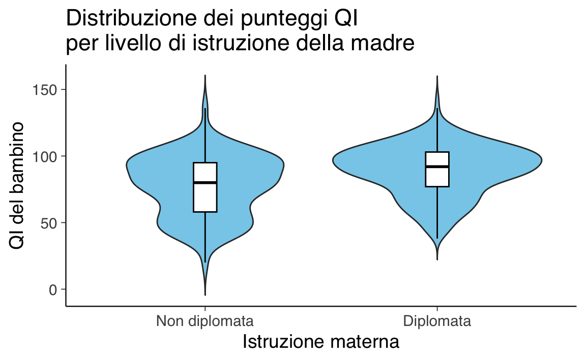
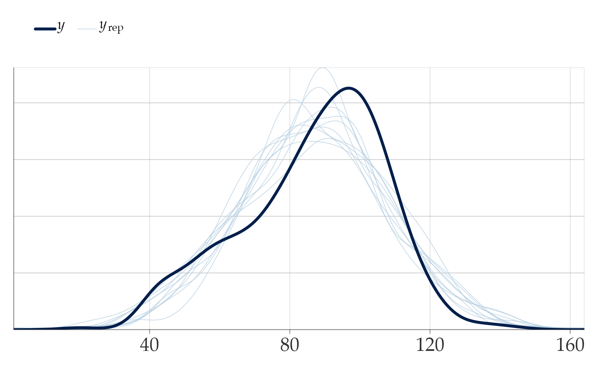
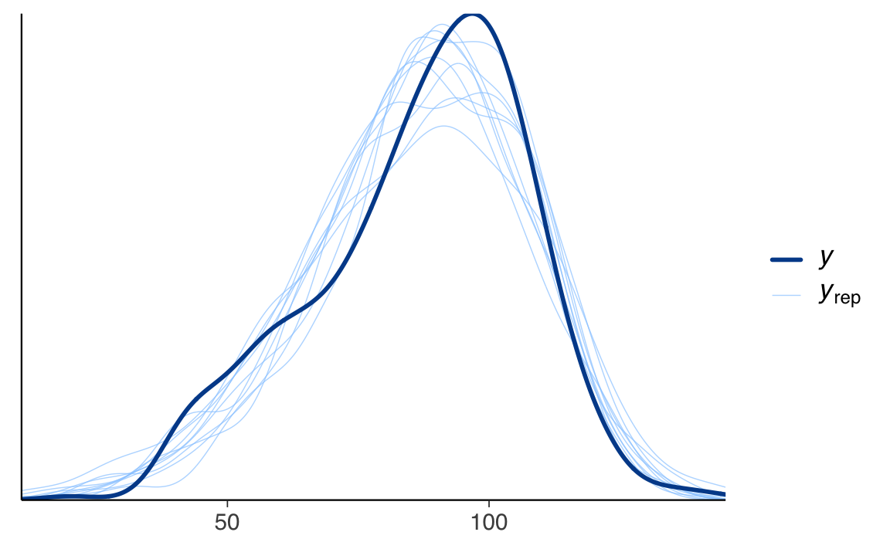
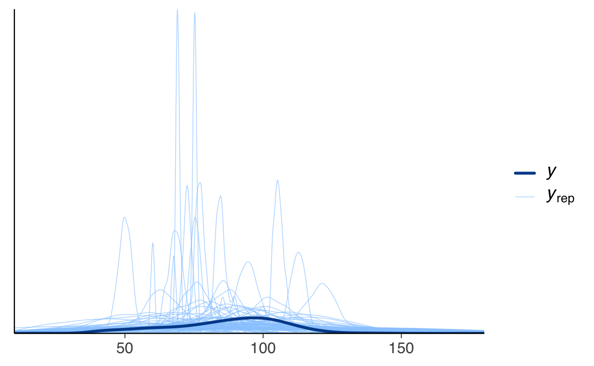

here::here("code", "_common.R") |>
source()
# Load packages
if (!requireNamespace("pacman")) install.packages("pacman")
pacman::p_load(cmdstanr, posterior, brms, bayestestR, insight)66 Confronto tra le medie di due gruppi
Introduzione
Uno degli obiettivi fondamentali nella ricerca psicologica è comprendere se e quanto due gruppi differiscano tra loro. Ad esempio, potremmo chiederci se un trattamento ha prodotto un cambiamento nel comportamento, se un gruppo clinico mostra livelli più elevati di ansia rispetto a un gruppo di controllo, o se due condizioni sperimentali generano risposte differenti. In tutti questi casi, l’interesse non riguarda soltanto la presenza di una differenza, ma anche la sua grandezza e l’incertezza con cui possiamo stimarla.
L’approccio classico a tali quesiti si fonda sul test d’ipotesi frequentista, che assume come punto di partenza l’assenza di differenze tra i gruppi – la cosiddetta ipotesi nulla. Attraverso questo metodo, si valuta quanto i dati osservati siano compatibili con tale ipotesi, ottenendo come risultato il p-value, ovvero la probabilità di osservare un effetto altrettanto estremo o più estremo sotto l’ipotesi nulla.
Tuttavia, questa metodologia presenta diversi problemi. Innanzitutto, riduce l’analisi a una decisione binaria – “significativo” o “non significativo” – basata su soglie arbitrarie come il convenzionale p < 0.05, senza offrire una reale comprensione della grandezza dell’effetto. Inoltre, il p-value è spesso frainteso: molti ricercatori lo interpretano erroneamente come la probabilità che l’ipotesi nulla sia vera, oppure come la probabilità che l’ipotesi alternativa sia corretta, quando in realtà esso rappresenta soltanto la probabilità dei dati osservati dato che l’ipotesi nulla sia vera (Greenland et al., 2016). Un ulteriore limite è che il p-value non fornisce una misura diretta dell’incertezza associata alla stima dell’effetto, né tiene conto in modo trasparente della variabilità intrinseca ai dati (Wasserstein & Lazar, 2016).
Proprio per queste ragioni, negli ultimi anni si è diffuso un interesse crescente verso l’inferenza bayesiana, che permette un’analisi più ricca e informativa. A differenza del metodo frequentista, che si concentra sul rifiutare o meno un’ipotesi nulla, l’approccio bayesiano sposta l’attenzione sulla stima dell’effetto e sulla quantificazione dell’incertezza. Invece di produrre un semplice verdetto binario, restituisce una distribuzione di probabilità per i parametri di interesse, mostrando in modo esplicito quanto ancora non sappiamo dopo aver osservato i dati. Questa caratteristica è particolarmente preziosa in psicologia, dove l’eterogeneità tra individui e persino all’interno dello stesso individuo nel tempo è la norma.
Mentre il metodo frequentista si limita a valutare la compatibilità dei dati con un’ipotesi fissa, l’approccio bayesiano offre strumenti più potenti. Consente, ad esempio, di calcolare direttamente la probabilità che un trattamento sia effettivamente migliore di un altro, di esplorare un’intera gamma di possibili effetti anziché focalizzarsi solo sul confronto con l’ipotesi nulla, e di integrare in modo rigoroso conoscenze precedenti per ottenere stime più robuste, soprattutto quando i dati disponibili sono pochi.
In questo capitolo esploreremo come modellare la differenza tra due medie utilizzando un modello di regressione con variabile indicatrice, un approccio formalmente equivalente al classico t-test ma che, nell’ambito bayesiano, permette una stima più flessibile e informativa. Vedremo come l’inferenza bayesiana fornisca strumenti più intuitivi per interpretare l’incertezza e supportare decisioni fondate nella ricerca psicologica, superando molti dei limiti dell’approccio tradizionale.
66.1 Regressione bayesiana per due gruppi
Consideriamo il modello
\[ y_i=\alpha+\gamma D_i+\varepsilon_i,\qquad \varepsilon_i\sim\mathcal N(0,\sigma). \]
Definiamo le due medie di gruppo
\[ \mu_0 \equiv \mathbb E[y\mid D=0],\qquad \mu_1 \equiv \mathbb E[y\mid D=1]. \]
Sostituendo \(D=0\) e \(D=1\) nel modello otteniamo immediatamente:
\[ \mu_0=\alpha,\qquad \mu_1=\alpha+\gamma. \]
Quindi:
\[ \begin{align} \gamma &=\mu_1-\mu_0 \quad\text{(differenza tra le medie)},\notag\\ \alpha &=\mu_0 \quad\text{(media del gruppo di riferimento)}. \end{align} \]
Questo è il “ponte” concettuale: il coefficiente \(\gamma\) è la differenza tra medie, l’intercetta \(\alpha\) è la media del gruppo con \(D=0\), e \(\sigma\) è la deviazione standard comune (assunzione di omoscedasticità).
Forma a “medie di cella”. La stessa relazione si può scrivere come \(y_i \sim \mathcal N(\mu_{D_i},\sigma)\) con \(\mu_{D_i}=\mu_0(1-D_i)+\mu_1 D_i\). È equivalente: \(\mu_0=\alpha,\ \mu_1=\alpha+\gamma\).
66.2 Effetti centrati
Se trasformiamo il predittore in \(D_c=D-\tfrac12\in\{-\tfrac12,+\tfrac12\}\), il modello
\[ y_i=\alpha+\gamma D_{c,i}+\varepsilon_i \]
ha:
\[ \begin{align} \alpha &=\frac{\mu_0+\mu_1}{2}\quad\text{(media complessiva)},\notag\\ \gamma &=\mu_1-\mu_0\quad\text{(differenza tra medie)}. \end{align} \]
Così l’intercetta è la grand mean e \(\gamma\) è direttamente la differenza. È spesso una parametrizzazione didatticamente più pulita e aiuta a dare prior con significato immediato (una prior su \(\alpha\) come media complessiva e su \(\gamma\) come differenza attesa).
66.3 Codice brms
Poniamoci il problema di ottenere \(\mu_0,\ \mu_1,\ \mu_1-\mu_0\) con brm.
1) Codifica dummy \(D\in\{0,1\}\).
Supponiamo df con colonne: y, D (numeric 0/1 oppure factor con riferimento il gruppo “0”).
fit <- brm(
y ~ 1 + D,
data = df,
family = gaussian(),
prior = c(
prior(student_t(3, 0, 10), class = "Intercept"),
prior(student_t(3, 0, 10), class = "b"), # prior su gamma
prior(student_t(3, 0, 10), class = "sigma") # half-t implicita
),
backend = "cmdstanr",
chains = 4, iter = 2000, seed = 123
)
draws <- as_draws_df(fit)
# mappatura esplicita dai parametri del modello alle medie di gruppo
post <- draws %>%
transmute(
mu0 = b_Intercept, # = α
mu1 = b_Intercept + b_D, # = α + γ (se D è numerica 0/1)
delta = b_D, # = γ (differenza tra medie)
sigma = sigma
)
# Riassunti posteriori
posterior::summarise_draws(post[, c("mu0","mu1","delta","sigma")])Nota: se D è un fattore con codifica “treatment” (default), il coefficiente si chiamerà b_D<livello>; per due livelli, ad es. b_D1. In tal caso usa b_Intercept + b_D1 al posto di b_Intercept + b_D.
2) Effetti centrati \(D_c=D-1/2\).
df <- df %>% mutate(Dc = D - 0.5) # Dc ∈ {-0.5, +0.5}
fit_c <- brm(
y ~ 1 + Dc,
data = df,
family = gaussian(),
prior = c(
prior(normal(0, 10), class = "Intercept"), # prior sulla grand mean
prior(normal(0, 10), class = "b"), # prior sulla differenza
prior(student_t(3, 0, 10), class = "sigma")
),
backend = "cmdstanr",
chains = 4, iter = 2000, seed = 123
)
draws_c <- as_draws_df(fit_c)
post_c <- draws_c %>%
transmute(
grand_mean = b_Intercept, # = (μ0+μ1)/2
delta = b_Dc, # = μ1 - μ0
mu0 = b_Intercept - 0.5 * b_Dc,
mu1 = b_Intercept + 0.5 * b_Dc,
sigma = sigma
)
posterior::summarise_draws(post_c[, c("grand_mean","mu0","mu1","delta","sigma")])Qui il coefficiente sul predittore è già la differenza tra le medie. L’intercetta è la media complessiva. È spesso la scelta migliore per esposizione e per specificare prior informative.
3) Parametrizzazione a medie di cella (senza intercetta).
Se trattiamo il gruppo come fattore e togliamo l’intercetta (0 + group), i coefficienti sono direttamente le medie \(\mu_0\) e \(\mu_1\).
df <- df %>% mutate(group = factor(D, levels = c(0,1), labels = c("G0","G1")))
fit_cells <- brm(
y ~ 0 + group, # niente intercetta: stimi direttamente μ0 e μ1
data = df, family = gaussian(),
prior = c(
prior(normal(0, 10), class = "b", coef = "groupG0"), # prior su μ0
prior(normal(0, 10), class = "b", coef = "groupG1"), # prior su μ1
prior(student_t(3, 0, 10), class = "sigma")
),
backend = "cmdstanr",
chains = 4, iter = 2000, seed = 123
)
draws_cells <- as_draws_df(fit_cells)
post_cells <- draws_cells %>%
transmute(
mu0 = b_groupG0,
mu1 = b_groupG1,
delta = b_groupG1 - b_groupG0,
sigma = sigma
)
posterior::summarise_draws(post_cells[, c("mu0","mu1","delta","sigma")])Questa forma è molto trasparente e ci consente, se vogliamo, di assegnare prior indipendenti alle due medie.
Osservazione tecnica: se poniamo prior indipendenti su \(\alpha\) e \(\gamma\) nella parametrizzazione con intercetta, le prior indotte su \(\mu_0\) e \(\mu_1\) risultano correlate: \(\mu_0=\alpha,\ \mu_1=\alpha+\gamma\) ⇒ \(\mathrm{Cov}(\mu_0,\mu_1)=\mathrm{Var}(\alpha)\). Se desideriamo davvero indipendenza a priori tra le due medie, la forma “medie di cella” è più naturale.
66.3.1 Interpretazione operativa (cosa leggere nelle posteriori)
- Con codifica \(D\in\{0,1\}\), l’intercetta posteriore è la media del gruppo \(D=0\); la distribuzione posteriore del coefficiente su \(D\) è la differenza \(\mu_1-\mu_0\).
- Con codifica centrata \(D_c\), l’intercetta è la grand mean, il coefficiente è ancora \(\mu_1-\mu_0\); è spesso la scelta didatticamente più pulita.
- Con “medie di cella”, i coefficienti sono \(\mu_0\) e \(\mu_1\); la differenza si ottiene come combinazione lineare a posteriori.
66.3.2 Confronto tra approccio bayesiano e frequentista
L’analisi statistica dei dati può essere condotta secondo due paradigmi fondamentalmente diversi: l’approccio frequentista e quello bayesiano. Queste due prospettive differiscono radicalmente nella concezione della natura dei parametri, nell’interpretazione della probabilità e nel modo di quantificare l’incertezza.
Nell’approccio frequentista, i parametri del modello (come la differenza tra medie dei gruppi, indicata con γ) sono considerati quantità fisse ma sconosciute. I dati, al contrario, sono visti come realizzazioni di variabili aleatorie, frutto di un processo di campionamento casuale. L’inferenza si basa sul comportamento delle statistiche calcolate sui campioni in un ipotetico universo di esperimenti ripetuti infinite volte sotto identiche condizioni.
Un esempio emblematico è rappresentato dall’intervallo di confidenza al 95%: nella logica frequentista, esso non esprime la probabilità che il parametro vero cada in un determinato range, ma indica piuttosto che, se ripetessimo l’esperimento infinite volte, il 95% di tali intervalli conterrebbe il valore vero del parametro. Allo stesso modo, il p-value non rappresenta la probabilità che l’ipotesi nulla sia vera, ma esprime la probabilità di osservare dati almeno altrettanto estremi di quelli effettivamente osservati, nell’ipotesi che l’ipotesi nulla sia corretta. Nel contesto del confronto tra due gruppi, il frequentista calcola una statistica test e la confronta con una distribuzione teorica di riferimento, chiedendosi essenzialmente: “Se non ci fosse alcun effetto, quanto sarebbero rari i dati che ho osservato?”.
L’approccio bayesiano, al contrario, tratta i parametri come variabili aleatorie, a cui assegna distribuzioni di probabilità che rappresentano il grado di incertezza circa i loro valori. A differenza del metodo frequentista, che considera α, γ e σ come valori fissi da stimare, il metodo bayesiano assegna a questi parametri distribuzioni iniziali (prior) basate su conoscenze pregresse o su assunzioni poco informative. Dopo aver osservato i dati, queste distribuzioni vengono aggiornate secondo il teorema di Bayes, producendo le distribuzioni a posteriori che riflettono la nostra incertezza sui parametri alla luce dell’evidenza empirica.
La distribuzione a posteriori di γ risulta particolarmente informativa, in quanto permette di quantificare direttamente la plausibilità di diversi valori dell’effetto tra i gruppi. Questo consente di: calcolare la probabilità che l’effetto sia positivo, negativo o superiore a una soglia clinicamente rilevante; ottenere intervalli di credibilità (es. al 95%) che indicano un range di valori in cui, con alta probabilità, cade il vero effetto; confrontare i risultati con le aspettative teoriche, verificando se i dati supportano, indeboliscono o ribaltano le ipotesi iniziali.
Mentre il p-value frequentista fornisce solo una misura di “quanto estremi sono i dati sotto l’ipotesi nulla”, l’approccio bayesiano offre una misura diretta della plausibilità delle ipotesi, in un linguaggio probabilistico più intuitivo e meno vincolato a soglie arbitrarie di significatività. Questa differenza epistemologica fondamentale rende l’inferenza bayesiana particolarmente adatta a rispondere a domande di ricerca che richiedono una quantificazione diretta dell’incertezza sui parametri e sulle ipotesi di interesse.
66.4 Un esempio illustrativo: il ruolo dell’istruzione materna
Dopo aver discusso le differenze tra approccio frequentista e bayesiano, vediamo ora come questi due modi di inferire si comportano su un caso reale. Utilizzeremo un dataset classico in psicologia dello sviluppo, che riporta i punteggi di quoziente intellettivo (QI) di bambini, insieme a informazioni sul livello di istruzione della madre.
La domanda che ci poniamo è semplice, ma rilevante: i figli di madri diplomate (che hanno completato la scuola superiore) mostrano in media un QI diverso rispetto ai figli di madri non diplomate?
66.4.1 Esplorazione iniziale dei dati
Importiamo il dataset e verifichiamo la struttura delle variabili:
kidiq <- rio::import(here::here("data", "kidiq.dta"))
glimpse(kidiq)
#> Rows: 434
#> Columns: 5
#> $ kid_score <dbl> 65, 98, 85, 83, 115, 98, 69, 106, 102, 95, 91, 58, 84, 7…
#> $ mom_hs <dbl> 1, 1, 1, 1, 1, 0, 1, 1, 1, 1, 1, 1, 1, 1, 0, 1, 1, 1, 1,…
#> $ mom_iq <dbl> 121.12, 89.36, 115.44, 99.45, 92.75, 107.90, 138.89, 125…
#> $ mom_work <dbl> 4, 4, 4, 3, 4, 1, 4, 3, 1, 1, 1, 4, 4, 4, 2, 1, 3, 3, 4,…
#> $ mom_age <dbl> 27, 25, 27, 25, 27, 18, 20, 23, 24, 19, 23, 24, 27, 26, …Calcoliamo alcune statistiche descrittive per ciascun gruppo:
Vediamo così che il campione include 93 bambini con madri non diplomate e 341 con madri diplomate, con una differenza apparente nei punteggi medi di QI. Ma questa differenza è solo un effetto casuale, o riflette una tendenza reale nella popolazione?
Per rispondere, analizziamo il problema utilizzando entrambi gli approcci.
66.4.1.1 Approccio frequentista
Per valutare se la differenza osservata è compatibile con l’ipotesi che non ci sia alcuna differenza nella popolazione, applichiamo il t-test per campioni indipendenti:
t.test(
kid_score ~ mom_hs,
data = kidiq,
var.equal = TRUE
)
#>
#> Two Sample t-test
#>
#> data: kid_score by mom_hs
#> t = -5.1, df = 432, p-value = 6e-07
#> alternative hypothesis: true difference in means between group 0 and group 1 is not equal to 0
#> 95 percent confidence interval:
#> -16.336 -7.207
#> sample estimates:
#> mean in group 0 mean in group 1
#> 77.55 89.32Questa funzione restituisce la stima della differenza media, l’intervallo di confidenza al 95%, e il valore del p-value. Il p-value rappresenta la probabilità di osservare una differenza almeno così grande se non ci fosse alcuna differenza reale nella popolazione (cioè sotto l’ipotesi nulla \(\mu_1 = \mu_2\)).
È una misura indiretta dell’evidenza contro l’ipotesi nulla: più è piccolo il p-value, meno plausibile appare l’ipotesi di assenza di differenza. Ma, come abbiamo visto nei capitoli precedenti, questo tipo di inferenza è vincolato da assunzioni forti e da interpretazioni spesso controintuitive.
Nel prossimo paragrafo, analizzeremo lo stesso problema con l’approccio bayesiano, per ottenere una visione più continua e informativa dell’incertezza sulla differenza tra i gruppi.
66.4.1.2 Approccio bayesiano
A differenza dell’approccio frequentista, che parte da un’ipotesi nulla e valuta la compatibilità dei dati con essa, il paradigma bayesiano si concentra direttamente sull’effetto che vogliamo stimare. Non ci si chiede se la differenza tra gruppi “esiste”, ma quanto è plausibile e quanto è incerta.
Per farlo, costruiamo un modello probabilistico che descriva la relazione tra il QI dei bambini e il livello di istruzione materna. Il modello è una semplice regressione con variabile dummy:
\[ y_i \sim \mathcal{N}(\mu_i, \sigma), \quad \mu_i = \alpha + \gamma D_i, \]
dove:
- \(y_i\) è il punteggio di QI del bambino \(i\),
- \(D_i = 0\) se la madre non è diplomata, \(1\) se è diplomata,
- \(\alpha\) rappresenta il QI medio per i figli di madri non diplomate,
- \(\gamma\) rappresenta la differenza tra i gruppi,
- \(\sigma\) è la deviazione standard residua.
66.4.1.2.1 Stima del modello con brms
Stimiamo il modello utilizzando il pacchetto brms, che permette di ottenere direttamente la distribuzione a posteriori dei parametri:
fit_1 <- brm(
kid_score ~ mom_hs,
data = kidiq,
backend = "cmdstanr",
silent = 0
)Una volta ottenuti i campioni a posteriori, possiamo rispondere in modo diretto alla domanda: qual è la probabilità che la differenza media tra i due gruppi superi una soglia di interesse, ad esempio 5 punti?
posterior_samples <- as_draws_df(fit_1)
mean(posterior_samples$b_mom_hs > 5)
#> [1] 0.9975Questo valore non è un p-value, ma una vera probabilità condizionata ai dati osservati. Ad esempio, un risultato pari a 0.96 può essere interpretato come: “dato il nostro modello e i dati disponibili, c’è una probabilità del 96% che i figli di madri diplomate abbiano in media un QI superiore di almeno 5 punti”.
66.4.1.2.2 Visualizzare la variabilità nei dati
Un grafico aiuta a rappresentare non solo le medie, ma anche la distribuzione dei punteggi all’interno di ciascun gruppo:
ggplot(kidiq, aes(x = as.factor(mom_hs), y = kid_score)) +
geom_violin(trim = FALSE, fill = okabe_ito["sky"]) +
geom_boxplot(width = 0.1, outlier.shape = NA, fill = "white", color = "black") +
labs(
x = "Istruzione materna",
y = "QI del bambino",
title = "Distribuzione dei punteggi QI\nper livello di istruzione della madre"
) +
scale_x_discrete(labels = c("0" = "Non diplomata", "1" = "Diplomata"))
Il grafico evidenzia che, pur in presenza di una differenza tra le medie, esiste una notevole sovrapposizione tra i gruppi. Questo riflette la naturale variabilità dei dati psicologici e rende evidente perché la sola media non basta: è l’intera distribuzione che ci interessa comprendere.
66.4.2 Cosa cambia davvero tra i due approcci?
Entrambi gli approcci usano gli stessi dati e, in presenza di campioni ampi e modelli lineari semplici, spesso portano a conclusioni numericamente simili. Tuttavia, ciò che cambia profondamente è il significato dei risultati.
| Aspetto | Frequentista | Bayesiano |
|---|---|---|
| Ipotesi di partenza | Assume \(\mu_1 = \mu_2\) (ipotesi nulla) | Nessuna ipotesi nulla |
| Obiettivo | Verificare se la differenza osservata è improbabile sotto \(H_0\) | Stimare la probabilità della differenza tra i gruppi |
| Interpretazione | Il p-value è una probabilità condizionata da \(H_0\) | La probabilità è condizionata dai dati osservati |
| Rappresentazione | Intervallo di confidenza | Intervallo di credibilità |
| Uso dei dati precedenti | Non previsto | Integrabile tramite prior |
Il bayesianesimo, in questo contesto, non è solo una tecnica alternativa, ma un modo diverso di porre le domande e interpretare le risposte. Invece di dire “questa differenza è significativa?”, possiamo chiedere “quanto è plausibile, alla luce dei dati, che la differenza superi una soglia rilevante?”
Nel prossimo paragrafo, estenderemo questa analisi esplorando la sensibilità del modello bayesiano rispetto alla scelta dei prior e approfondiremo strumenti diagnostici che ci aiutano a valutare quanto il modello rifletta davvero i dati.
66.5 Approfondimenti bayesiani
Il confronto tra i gruppi sul QI ci ha già mostrato i vantaggi dell’inferenza bayesiana: la possibilità di quantificare direttamente l’incertezza sulla differenza tra le medie e di stimare probabilità a posteriori interpretabili. In questa sezione vediamo come l’approccio bayesiano permetta di raffinare il modello e verificare la coerenza delle ipotesi con i dati, prima e dopo l’osservazione.
66.5.1 Intervallo di credibilità e verifica predittiva
Una volta stimato il modello, possiamo calcolare un intervallo di credibilità all’89%, una soglia suggerita in ambito didattico per sottolineare che non si tratta di una soglia “speciale”, ma di un’espressione quantitativa dell’incertezza residua:
bayestestR::hdi(fit_1, parameters = "mom_hs", ci = 0.89)
#> Highest Density Interval
#>
#> Parameter | 89% HDI
#> -------------------------
#> mom_hs | [8.36, 15.66]Per valutare se il modello riproduce adeguatamente i dati, possiamo utilizzare la verifica predittiva a posteriori:
pp_check(fit_1)
Nel nostro caso, il modello riproduce bene la forma generale della distribuzione osservata, ma si notano leggere discrepanze nelle code. Questo suggerisce che la distribuzione normale, pur efficace, potrebbe essere migliorata per catturare l’asimmetria presente nei dati.
66.5.2 Flessibilità modellistica
Per rappresentare meglio la variabilità asimmetrica, possiamo utilizzare una distribuzione skew-normal, che generalizza la normale consentendo una coda più estesa da un lato:
fit_2 <- brm(
kid_score ~ mom_hs,
family = skew_normal(),
backend = "cmdstanr",
data = kidiq
)Il modello skew-normal migliora l’adattamento ai dati, come evidenziato da pp_check(fit_2), che mostra una maggiore sovrapposizione tra predizioni e osservazioni.
pp_check(fit_2)
66.5.3 Verifica predittiva a priori
Un passaggio fondamentale nella costruzione di modelli bayesiani consiste nel chiedersi: quali dati ci aspetteremmo di vedere, se avessimo solo i prior e nessun dato reale? Con il prior predictive check, simuliamo dati fittizi basati unicamente sulle distribuzioni a priori, per verificare se le nostre ipotesi iniziali sono compatibili con la scala e la natura del fenomeno psicologico in esame.
Per esempio, possiamo specificare prior debolmente informativi ma plausibili:
prior_gaussian <-
prior(normal(90, 20), class = "Intercept") +
prior(normal(0, 15), class = "b", coef = "mom_hs") +
prior(cauchy(0, 20), class = "sigma")Poi stimiamo un modello basato solo su questi prior, ignorando i dati:
fit_prior <- brm(
kid_score ~ mom_hs,
data = kidiq,
prior = prior_gaussian,
family = gaussian(),
backend = "cmdstanr",
sample_prior = "only"
)Visualizzando i dati simulati:
pp_check(fit_prior, ndraws = 100) + xlim(10, 180)
possiamo verificare se i prior generano predizioni realistiche. In questo caso, vediamo che i valori simulati si distribuiscono su un intervallo ampio ma plausibile, coerente con ciò che sappiamo sul QI. Questo indica che i prior non sono né troppo restrittivi né irrealistici.
66.5.4 Incorporare conoscenza pregressa
Quando disponiamo di evidenze precedenti (ad esempio, studi che indicano un effetto medio dell’istruzione materna di circa 10 punti QI), possiamo formalizzarle con un prior informativo:
fit_3 <- brm(
kid_score ~ mom_hs,
data = kidiq,
prior = c(set_prior("normal(10, 5)", class = "b", coef = "mom_hs")),
backend = "cmdstanr"
)summary(fit_3)
#> Family: gaussian
#> Links: mu = identity; sigma = identity
#> Formula: kid_score ~ mom_hs
#> Data: kidiq (Number of observations: 434)
#> Draws: 4 chains, each with iter = 2000; warmup = 1000; thin = 1;
#> total post-warmup draws = 4000
#>
#> Regression Coefficients:
#> Estimate Est.Error l-95% CI u-95% CI Rhat Bulk_ESS Tail_ESS
#> Intercept 77.78 1.91 74.06 81.67 1.00 4066 2784
#> mom_hs 11.48 2.07 7.33 15.57 1.00 3933 2869
#>
#> Further Distributional Parameters:
#> Estimate Est.Error l-95% CI u-95% CI Rhat Bulk_ESS Tail_ESS
#> sigma 19.89 0.69 18.60 21.35 1.00 4014 3105
#>
#> Draws were sampled using sample(hmc). For each parameter, Bulk_ESS
#> and Tail_ESS are effective sample size measures, and Rhat is the potential
#> scale reduction factor on split chains (at convergence, Rhat = 1).Se i dati confermano il pattern, la distribuzione a posteriori sarà simile a quella ottenuta con prior deboli. Ma in campioni piccoli o più rumorosi, questo tipo di informazione può fare una grande differenza, aiutando a stabilizzare l’inferenza.
66.5.5 Test di ipotesi bayesiano
Infine, possiamo formulare ipotesi probabilistiche direttamente interpretabili, come:
Qual è la probabilità che la differenza tra i gruppi superi i 5 punti?
hypothesis(fit_1, "mom_hs > 5")
#> Hypothesis Tests for class b:
#> Hypothesis Estimate Est.Error CI.Lower CI.Upper Evid.Ratio
#> 1 (mom_hs)-(5) > 0 6.78 2.31 3.02 10.54 399
#> Post.Prob Star
#> 1 1 *
#> ---
#> 'CI': 90%-CI for one-sided and 95%-CI for two-sided hypotheses.
#> '*': For one-sided hypotheses, the posterior probability exceeds 95%;
#> for two-sided hypotheses, the value tested against lies outside the 95%-CI.
#> Posterior probabilities of point hypotheses assume equal prior probabilities.A differenza del p-value, il risultato fornisce una risposta diretta: ad esempio, una probabilità del 98% che l’effetto sia maggiore di 5. Questo è il tipo di affermazione che possiamo portare nella discussione scientifica o clinica, senza bisogno di traduzioni arbitrarie.
Riflessioni conclusive
Il confronto tra medie rappresenta una procedura statistica fondamentale in psicologia, ma la sua apparente semplicità nasconde complessità interpretative spesso trascurate. Tradizionalmente, l’analisi frequentista ci ha abituati a valutare le differenze attraverso il prisma del p-value, un approccio che risulta doppiamente limitante: non solo per la sua natura binaria, ma soprattutto per la sua intrinseca incapacità di cogliere la dinamica individuale dei processi psicologici. Come evidenziato da recenti sviluppi nella scienza dell’intervento (Hayes et al., 2022), l’applicazione predittiva di risultati normativi agli individui poggia sul presupposto insostenibile dell’ergodicità - l’idea che lo stesso modello dinamico si applichi uniformemente a tutti i partecipanti (omogeneità) e che le caratteristiche dei dati rimangano stabili nel tempo (stazionarietà).
L’analisi bayesiana, implementata attraverso strumenti come brms, ci offre una prospettiva più articolata a livello di gruppo, permettendoci di quantificare l’incertezza attraverso distribuzioni a posteriori e incorporare conoscenze pregresse. Tuttavia, anche questo approccio condivide con i metodi tradizionali un limite fondamentale: l’incapacità di modellare adeguatamente la non-stazionarietà e l’eterogeneità dinamica che caratterizzano i veri processi di cambiamento psicologico. Come osservato da Veillette & Nusbaum (2025), un effetto medio significativo può nascondere una realtà in cui solo una minoranza reagisce in modo marcato (ad esempio, il 30% con d=4 mentre il 70% resta invariato), scenario che rappresenta la norma piuttosto che l’eccezione in psicologia.
Questa consapevolezza ci impone una duplice rivoluzione metodologica. In primo luogo, dobbiamo abbandonare l’illusione ergodica che ha dominato la ricerca psicologica, riconoscendo che la vita mentale non assomiglia a “biglie che cadono in una tavola di Galton” - dove ogni ostacolo (trauma, pregiudizio, risorsa personale) altera in modo unico e irreplicabile i percorsi individuali. In secondo luogo, dobbiamo abbracciare approcci idionomici che partano dall’analisi idiografica ad alta densità temporale, per poi cercare - quando utile - generalizzazioni nomotetiche che migliorino effettivamente l’adattamento individuale.
Le implicazioni sono profonde sia per la ricerca che per la pratica clinica. In ambito terapeutico, la Terapia Basata sui Processi (PBT) incarna questa svolta epistemologica, spostando l’attenzione dai protocolli standardizzati a un’analisi funzionale dei processi biopsicosociali rilevanti per il singolo cliente. Sul piano metodologico, strumenti come l’Ecological Momentary Assessment permettono di mappare le interrelazioni dinamiche intra-individuali, superando i limiti della psicometria tradizionale.
In definitiva, il confronto tra medie rimane uno strumento prezioso per domande a livello di popolazione, ma non può costituire il fondamento di una psicologia matura. Come disciplina, ci troviamo a un bivio: continuare a produrre stime aggregate di dubbia rilevanza individuale, o impegnarci nella sfida più complessa ma necessaria di sviluppare:
- misure sensibili ai processi dinamici,
- disegni longitudinali ad alta risoluzione temporale,
- modelli analitici in grado di cogliere non-linearità e interazioni contestuali.
La statistica bayesiana rappresenta un passo avanti importante, ma il vero progresso epistemologico risiederà nella nostra capacità di conciliare rigore metodologico con pluralismo analitico - riconoscendo che nessun singolo valore (p-value, BF o effect size) potrà mai catturare la complessità del divenire psicologico individuale. Solo abbracciando strumenti all’altezza di questa complessità potremo costruire una psicologia realmente informativa, replicabile e utile - sia per comprendere la mente umana che per promuoverne il benessere.
La sfida che ci attende non è tanto tecnica quanto culturale: imparare a convivere con la complessità senza rinunciare al rigore, a comunicare l’incertezza senza scivolare nel relativismo, a valorizzare l’unicità senza abbandonare la generalizzazione. In questo cammino, la statistica non dovrà essere il letto di Procuste che riduce la realtà alla misurabilità, ma la bussola che ci guida nell’esplorazione innovativa della diversità psicologica umana.
Informazioni sull’ambiente di sviluppo
sessionInfo()
#> R version 4.5.1 (2025-06-13)
#> Platform: aarch64-apple-darwin20
#> Running under: macOS Sequoia 15.6.1
#>
#> Matrix products: default
#> BLAS: /Library/Frameworks/R.framework/Versions/4.5-arm64/Resources/lib/libRblas.0.dylib
#> LAPACK: /Library/Frameworks/R.framework/Versions/4.5-arm64/Resources/lib/libRlapack.dylib; LAPACK version 3.12.1
#>
#> locale:
#> [1] C/UTF-8/C/C/C/C
#>
#> time zone: Europe/Zagreb
#> tzcode source: internal
#>
#> attached base packages:
#> [1] stats graphics grDevices utils datasets methods base
#>
#> other attached packages:
#> [1] insight_1.3.1 bayestestR_0.16.1 cmdstanr_0.9.0
#> [4] pillar_1.11.0 tinytable_0.11.0 patchwork_1.3.1
#> [7] ggdist_3.3.3 tidybayes_3.0.7 bayesplot_1.13.0
#> [10] ggplot2_3.5.2 reliabilitydiag_0.2.1 priorsense_1.1.0
#> [13] posterior_1.6.1 loo_2.8.0 rstan_2.32.7
#> [16] StanHeaders_2.32.10 brms_2.22.0 Rcpp_1.1.0
#> [19] sessioninfo_1.2.3 conflicted_1.2.0 janitor_2.2.1
#> [22] matrixStats_1.5.0 modelr_0.1.11 tibble_3.3.0
#> [25] dplyr_1.1.4 tidyr_1.3.1 rio_1.2.3
#> [28] here_1.0.1
#>
#> loaded via a namespace (and not attached):
#> [1] gridExtra_2.3 inline_0.3.21 sandwich_3.1-1
#> [4] rlang_1.1.6 magrittr_2.0.3 multcomp_1.4-28
#> [7] snakecase_0.11.1 compiler_4.5.1 reshape2_1.4.4
#> [10] systemfonts_1.2.3 vctrs_0.6.5 stringr_1.5.1
#> [13] pkgconfig_2.0.3 arrayhelpers_1.1-0 fastmap_1.2.0
#> [16] backports_1.5.0 labeling_0.4.3 rmarkdown_2.29
#> [19] tzdb_0.5.0 haven_2.5.5 ps_1.9.1
#> [22] ragg_1.4.0 purrr_1.1.0 xfun_0.52
#> [25] cachem_1.1.0 jsonlite_2.0.0 broom_1.0.9
#> [28] parallel_4.5.1 R6_2.6.1 stringi_1.8.7
#> [31] RColorBrewer_1.1-3 lubridate_1.9.4 estimability_1.5.1
#> [34] knitr_1.50 zoo_1.8-14 R.utils_2.13.0
#> [37] pacman_0.5.1 readr_2.1.5 Matrix_1.7-3
#> [40] splines_4.5.1 timechange_0.3.0 tidyselect_1.2.1
#> [43] abind_1.4-8 yaml_2.3.10 codetools_0.2-20
#> [46] curl_6.4.0 processx_3.8.6 pkgbuild_1.4.8
#> [49] plyr_1.8.9 lattice_0.22-7 withr_3.0.2
#> [52] bridgesampling_1.1-2 coda_0.19-4.1 evaluate_1.0.4
#> [55] survival_3.8-3 RcppParallel_5.1.10 tensorA_0.36.2.1
#> [58] checkmate_2.3.2 stats4_4.5.1 distributional_0.5.0
#> [61] generics_0.1.4 rprojroot_2.1.0 hms_1.1.3
#> [64] rstantools_2.4.0 scales_1.4.0 xtable_1.8-4
#> [67] glue_1.8.0 emmeans_1.11.2 tools_4.5.1
#> [70] data.table_1.17.8 forcats_1.0.0 mvtnorm_1.3-3
#> [73] grid_4.5.1 QuickJSR_1.8.0 datawizard_1.2.0
#> [76] colorspace_2.1-1 nlme_3.1-168 cli_3.6.5
#> [79] textshaping_1.0.1 svUnit_1.0.6 Brobdingnag_1.2-9
#> [82] V8_6.0.5 gtable_0.3.6 R.methodsS3_1.8.2
#> [85] digest_0.6.37 TH.data_1.1-3 htmlwidgets_1.6.4
#> [88] farver_2.1.2 R.oo_1.27.1 memoise_2.0.1
#> [91] htmltools_0.5.8.1 lifecycle_1.0.4 MASS_7.3-65Bibliografia
Greenland, S., Senn, S. J., Rothman, K. J., Carlin, J. B., Poole, C., Goodman, S. N., & Altman, D. G. (2016). Statistical tests, P values, confidence intervals, and power: a guide to misinterpretations. European Journal of Epidemiology, 31(4), 1–14.
Hayes, S. C., Ciarrochi, J., Hofmann, S. G., Chin, F., & Sahdra, B. (2022). Evolving an idionomic approach to processes of change: Towards a unified personalized science of human improvement. Behaviour Research and Therapy, 156, 104155.
Kruschke, J. K. (2013). Bayesian estimation supersedes the t test. Journal of Experimental Psychology: General, 142(2), 573–603.
Veillette, J. P., & Nusbaum, H. C. (2025). Bayesian p-curve mixture models as a tool to dissociate effect size and effect prevalence. Communications Psychology, 3(1), 9.
Wasserstein, R. L., & Lazar, N. A. (2016). The ASA’s statement on p-values: context, process, and purpose. The American Statistician, 70(2), 129–133.